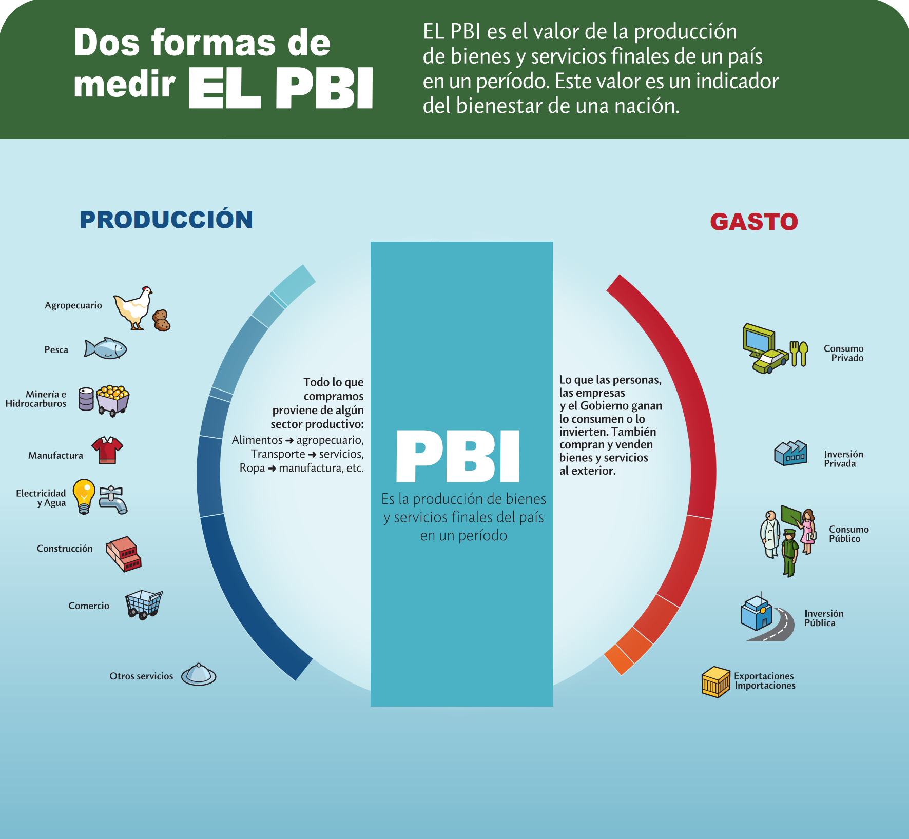
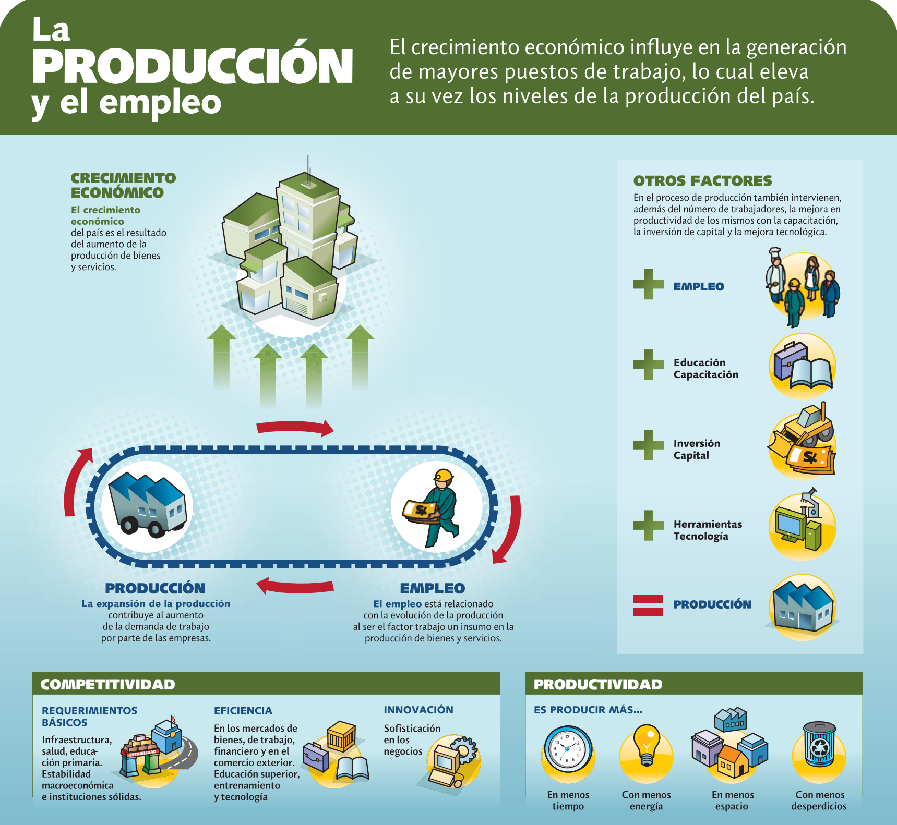
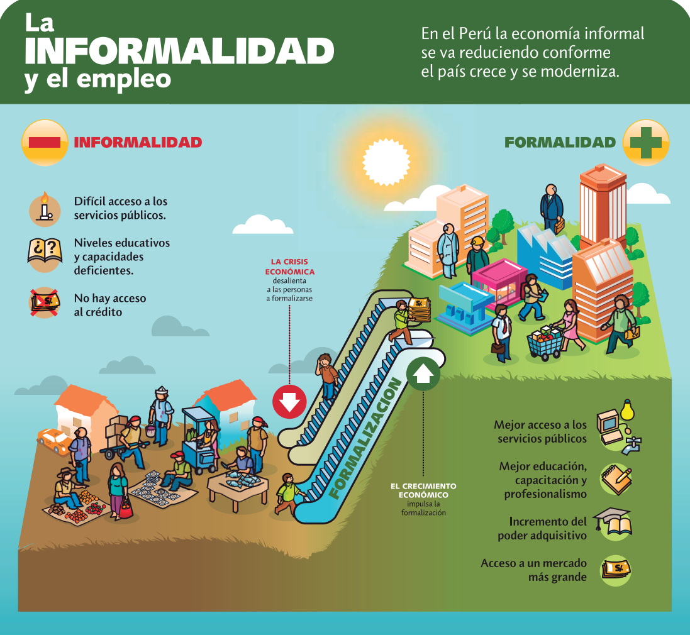
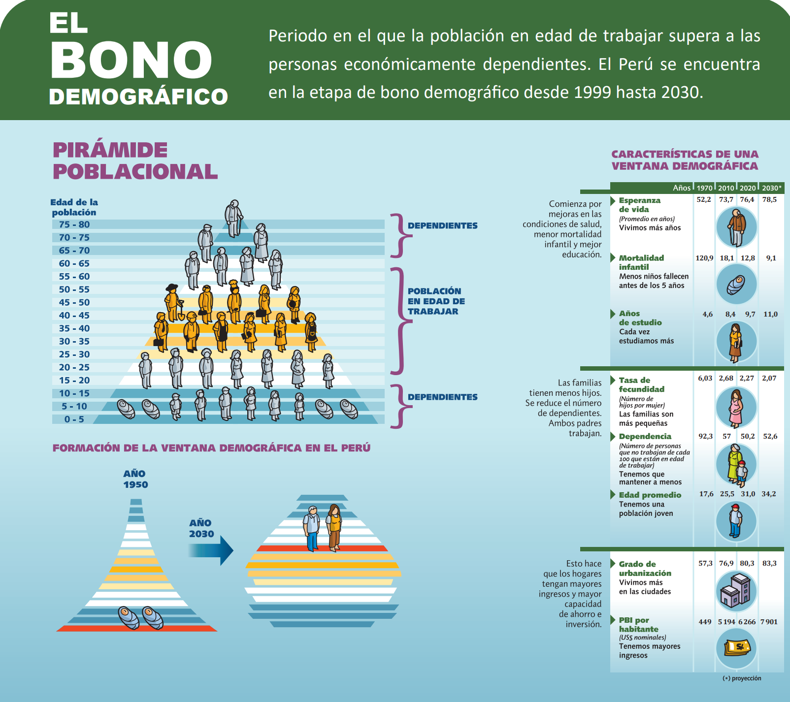
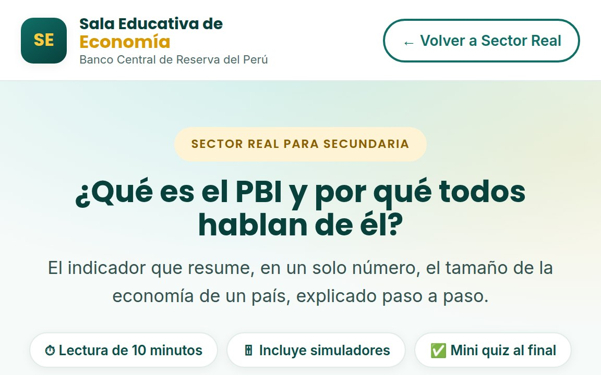
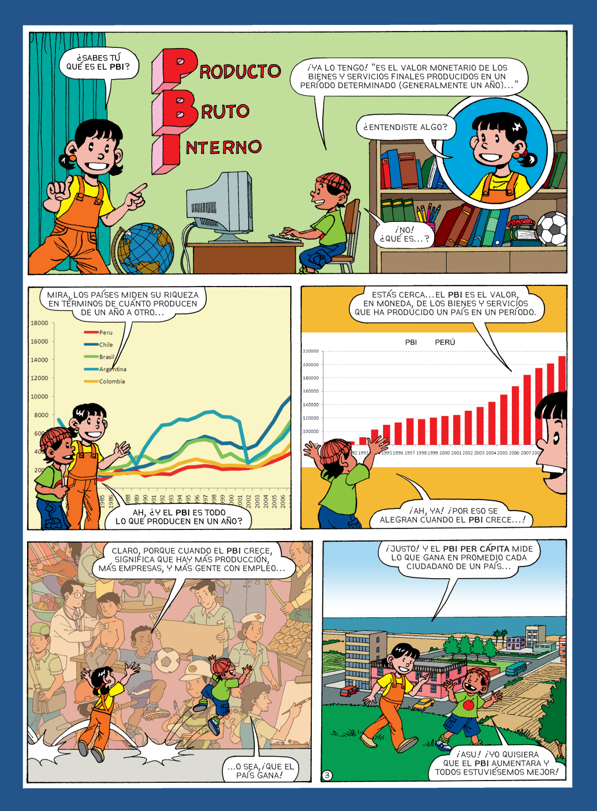
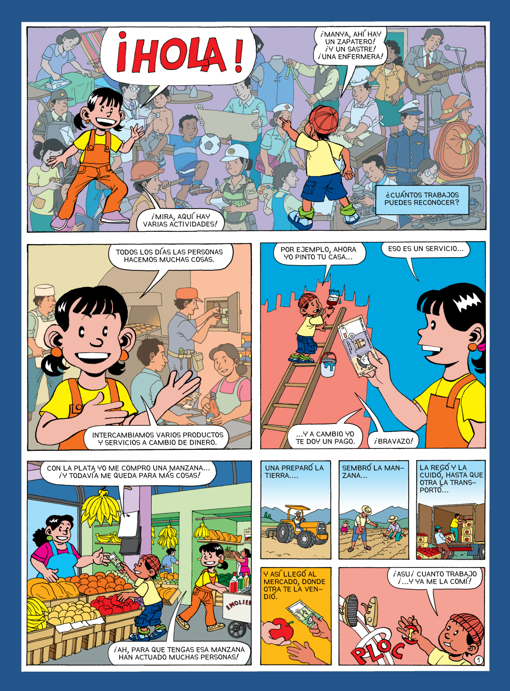

Por la producción
Se suma el valor agregado de cada sector: lo que cada actividad añade al valor de lo que compra a otras.
Agro + Pesca + Minería + … + Servicios
Aquí puedes ver uno de los principales indicadores macroeconómicos de un país, el Producto Bruto Interno (PBI), así como las diversas actividades que lo conforman. Mediante este indicador se podrá comparar la evolución de la economía peruana con la de los otros países de la región.
El Producto Bruto Interno (PBI) es el valor de todos los bienes y servicios finales producidos dentro del país durante un periodo. Se forma con la producción de los sectores primarios y de los sectores no primarios.
Extraen y procesan recursos naturales
Transforman, construyen y brindan servicios
Se suma el valor agregado de cada sector: lo que cada actividad añade al valor de lo que compra a otras.
Agro + Pesca + Minería + … + Servicios
Se suma todo lo que se gasta en los bienes y servicios finales producidos en el país.
C + I + G + X − M
Perú fue el segundo productor mundial de cobre y el segundo con las mayores reservas en 2023.
Un video del BCRP que explica, en pocos minutos, qué es el PBI y cómo se mide.
Material oficial del BCRP para repasar los conceptos del Sector Real y consultar las cifras más recientes.






